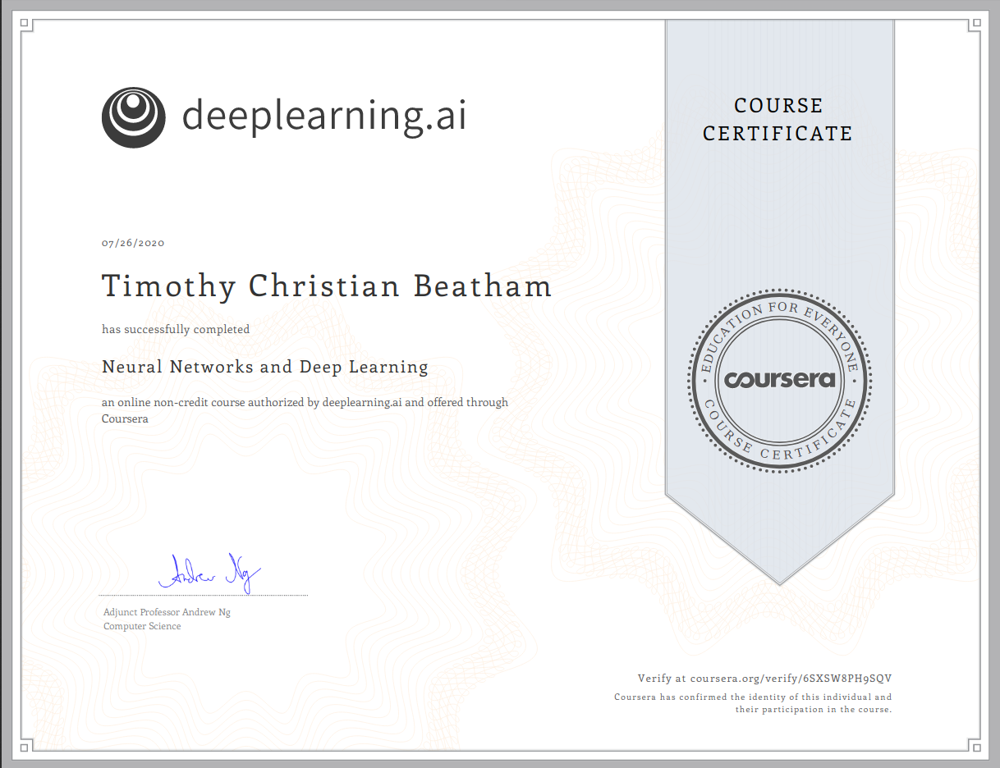

Starting DeepLearning.AI Specialization And Learning Kotlin
A Quick Note
Now that I have a job please note that the length of each blog post has been significantly reduced, and I expect my projects to be less exciting.
DeepLearning.AI
This week I have started a Coursera Specialization which is about Deep Learning. At the time of writing this blog post I have finished the first course of the specialization. So far I have implemented logistic regression, forward propagation, backwards propagation, gradient descent and created a shallow and deep neural network. I hope the course will equip me with the tools I need to build a successful career in Machine Learning in the future.
- Neural Network and Deep Learning
- Improving Deep Neural Networks
- Structuring Machine Learning Projects
- Convolutional Neural Networks
- Sequence Models
After I have completed this specialization I plan on starting another specialization in Natural Language Processing.
Kotlin
This week I have also started learning Kotlin. Kotlin is a multi paradigm programming language build by JetBrains the people who made the IntelliJ IDE. Kotlin is allows for comparability with Java meaning you can use Java libraries in Kotlin and you can use Kotlin libraries in Java using the Java-to-Kotlin converter. Kotlin is mainly used at the minute for Android Development but the language itself is getting more and more popular by the day.
In Kotlin has both Object Oriented and Functional elements to the programming language. Additionally it is strongly typed meaning you have to explicitly specify the data type of each variable which means it runs faster than languages such as Python.